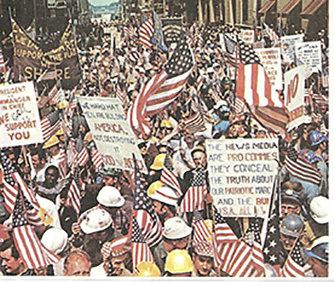
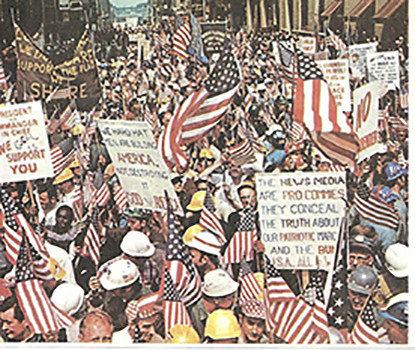
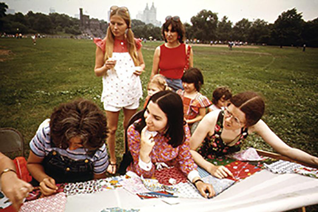
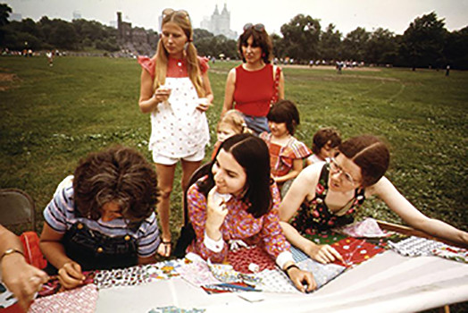

Summer Survival Kit
For Recession Casualities And
Inflation Victims
Summer Survival Kit
For Recession Casualities And
Inflation Victims
The 70's revival is back!
Remembered for the celebration of freedom and youth culture, the 1970's "flowerchild" is back in full swing in 2016. This summer in New York City, embrace your wild side. Take advantage of being in a city full of opportunity. Embrace being young and free.
So break out the jumpsuits, gauchos, tank turtlenecks, and platform shoes, because this is the ultimate (and economical) guide for you to have a fun, carefree 70's inspired summer in NYC.
Still not convinced?
Well, if tanning by pools and rocking some aviator sunglasses while you eat cheap, good food at street fairs isn't for you, check out the interactive neighborhood map below. The 70's revival has something for everyone, and this summer will certainly be one to never forget.
––Truman Ports
 

 
